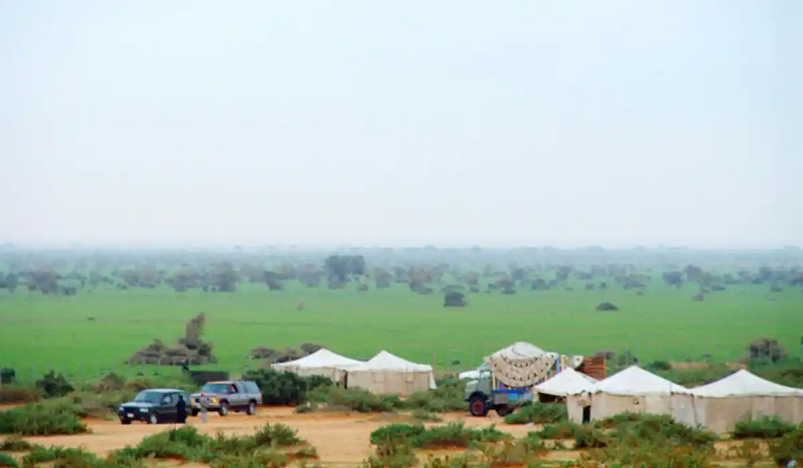

Lawyer and law firm in Hafr Al Batin, Saudi Arabia, for all case types. Fast legal consultation.

Our team serves every district and area of Hafr Al Batin without exception, with the same response speed and service standard.
Our team in Hafr Al Batin serves individual and corporate clients in a border city with a distinct military and commercial character, with practical experience in cross-border commercial cases and matters for individuals working in the military and civilian sectors.
Hafr Al Batin sits at a strategic location near the borders with Kuwait and Iraq, home to one of the largest military bases in the Kingdom, alongside notable commercial activity tied to trade and transport through nearby border crossings. This mix of military character and border commercial activity creates legal needs somewhat different from other Eastern Province cities. The city also sees relatively variable population movement given how many residents work in sectors involving periodic deployment or transfer.
We handle a number of personal status cases and custody and alimony for families of those working in the military and civilian sectors, alongside labor and employment cases for civilian employees at local facilities and companies. On the commercial side, there's strong demand for commercial debt collection between wholesale and retail traders connected to commercial transport through the border area.
Given the city's border location, we also help with files tied to the logistics sector and commercial transport, alongside real estate and property law for the growing residential development in the city's newer districts.
Hafr Al Batin cases go to the General Court for personal status and civil matters, and the Commercial Court for commercial disputes, with comprehensive electronic tracking via the Najiz platform at every stage without repeated in-person visits — particularly useful for our clients working at locations relatively far from the city center.
Recurring scenarios include a military family needing to settle a custody dispute while accounting for a parent's mobile work nature, a wholesale trader facing a dispute over overdue payments from a retail trader in the local market, or a civilian employee at a local facility needing to claim end-of-service dues. We handle each case with attention to the client's specific work circumstances.
Another recurring scenario: a commercial truck owner working the border route faces a dispute with a shipping company over delayed payment for goods that were actually delivered. We help the truck owner document the deliveries and formally claim payment from the company, while assessing whether the file needs to be escalated to the relevant commercial authority.
In personal status cases, we often start with a consultation that accounts for one party's specific work circumstances, particularly if they work in the military sector with a mobile assignment pattern. In large commercial disputes tied to border transport activity, full representation may be necessary from the start. In all cases, we make a point of explaining the available options realistically, including a time estimate for each path before you decide which one to pursue.
Signs that call for immediate contact: a custody disagreement needing an arrangement that accounts for a parent's mobility, delayed commercial payments from a party in the local market, or receiving a termination notice from a civilian employer. Addressing these situations early protects your rights, particularly given work circumstances that may be less stable than ordinary employment. We also recommend documenting any verbal agreement about custody or alimony arrangements in writing at the earliest opportunity, to avoid a future disagreement over the agreement's details.
It starts on WhatsApp with a brief description of your situation, followed by an assessment from a specializing lawyer, then a clear, time-bound plan that accounts for any time constraints tied to your work. Given the city's relative distance from other Eastern Province centers, we place particular importance on completing as much work remotely as possible. We also make sure to schedule court hearings well in advance so you can arrange your attendance even around changing work commitments.
For personal status cases, it's enough at first to clearly explain the situation. For commercial cases, having a copy of the invoices or the disputed contract helps. No documents are needed at the initial consultation stage — we only ask for them once you move to actually filing a formal claim. For labor cases, having a copy of the employment contract and any formal correspondence related to termination helps.
Our Hafr Al Batin team coordinates with the teams in Dammam and Al Ahsa, since many of our Hafr Al Batin clients relocate for work or residence to these cities. We ensure consistent handling of your file even as your work or residence location changes.
A common question: does moving frequently between work locations affect how my case is followed? No — most stages of follow-up happen over WhatsApp regardless of your current location. Another question: can I authorize someone else to handle certain administrative steps on my behalf during deployment periods? Yes, and we help you document a formal power of attorney that allows for this when needed.
We understand in Hafr Al Batin the particular nature of many of our clients' work in the military and cross-border commercial sectors, and we account for these circumstances when designing the right plan of action for each file, while maintaining the same standards of speed and clarity adopted across our national network.
We understand that many of our Hafr Al Batin clients face real time constraints due to the mobile nature of military or commercial work, and that the city's relative distance from other Eastern Province centers makes efficient handling even more important. We commit to designing a plan of action that fully accounts for your specific circumstances, minimizing any need for travel or in-person attendance to the absolute minimum actually required.
Our team in Hafr Al Batin covers every neighborhood and area without exception, including Al Qaisumah and the central downtown area, with the same response speed and service standard regardless of where you are in the city.
Yes, we handle custody and alimony cases involving a parent working in the military sector with a mobile assignment pattern with particular sensitivity.
Yes, we regularly handle commercial disputes between wholesale and retail traders connected to commercial transport through the border area.
Yes, we work to complete as much as possible over WhatsApp, with in-person attendance only for strictly necessary hearings.
Yes, we regularly handle end-of-service claims for civilian employees at companies and facilities in Hafr Al Batin.
No, the initial consultation is always free regardless of the sector the client works in; the cost of full representation is set transparently afterward, once we understand the specific circumstances of your file.
Yes, WhatsApp lets you reach us from anywhere, and we follow your file regardless of where you're currently stationed.
Reach a licensed lawyer within minutes on WhatsApp — in any city in the Kingdom.
Start your consultation